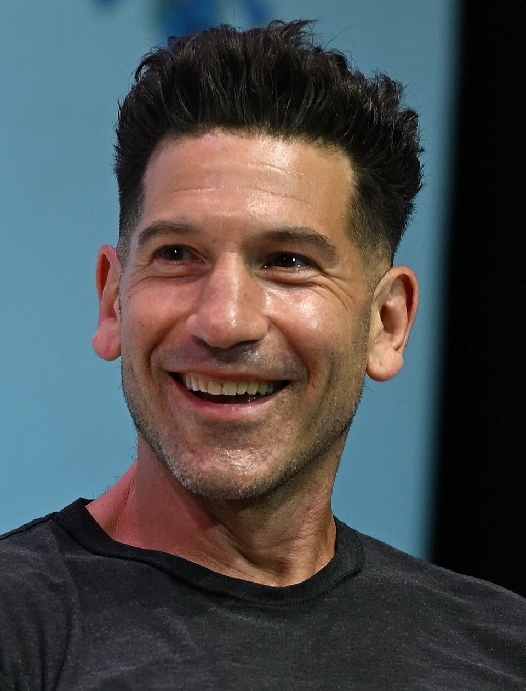

Tom Holland:
Interpreta nuevamente a Peter Parker y a su álter ego, Spider-Man. Su rol es proteger a sus seres queridos, y a la ciudad de nueva york contra el escándalo que genera Jean Grey.

Interpreta nuevamente a Peter Parker y a su álter ego, Spider-Man. Su rol es proteger a sus seres queridos, y a la ciudad de nueva york contra el escándalo que genera Jean Grey.
Interpreta nuevamente a Michelle 'MJ' Jones-Watson, interés amoroso de spider man. Su rol consiste en hacer su vida sin recordar a peter parker, pero en el intento tratar de recordarlo.

Interpreta a la mutante Jean Grey. En una desesperada búsqueda por su hermana, Jean trata de encontrarla sin pasar desapercibida.
Interpreta a Frank Castle, también conocido como The Punisher. Su rol consiste en acompañar a spider man en esta aventura.
